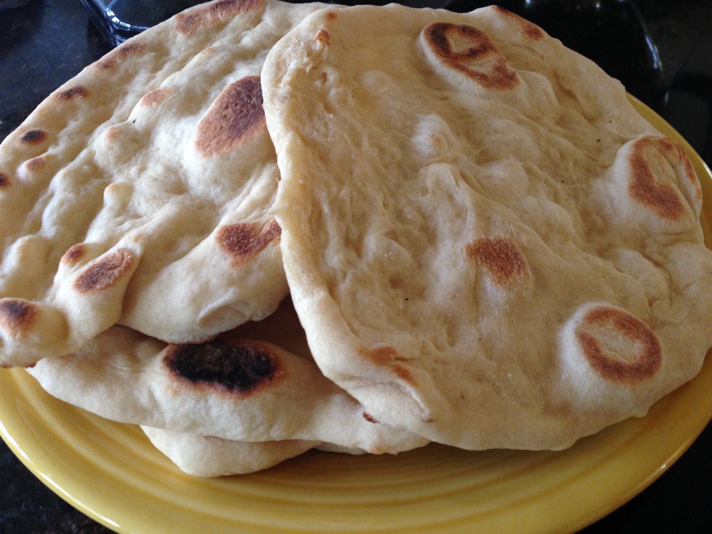

Pita Bread

Pita bread is an easy recipe to make at home and will be way better then the storebought equicalent
Ingredients
- 500gr flour
- 400gr lukewarm water
- 25gr olive oil
- 1 package (or 7gr) yeast
- 2 gr salt
- 30gr spices
- flour for dusting
Steps
- Add the water, yeast, olive oil and spices to the flour in a mixingbowl.
- Combine everything till a ragged ball of dough forms. Then add the salt.
- Knead for 20 minutes by hand or 10 minutes in a standmixer.
- Let the dough rest for 2 hours in a bowl with a damp towel on top.
- After 1 hour and 30 minutes pre heat the oven on the highest temperature possible.
- After 2 hours deflate the dough and devide it in 8 equal pieces.
- Shape the pieces by hand or with a rollingpin.
- Bake the pieces for 2-5 minutes in the oven. This depends on your oven so keep an eye on them while they bake.
- Enjoy!